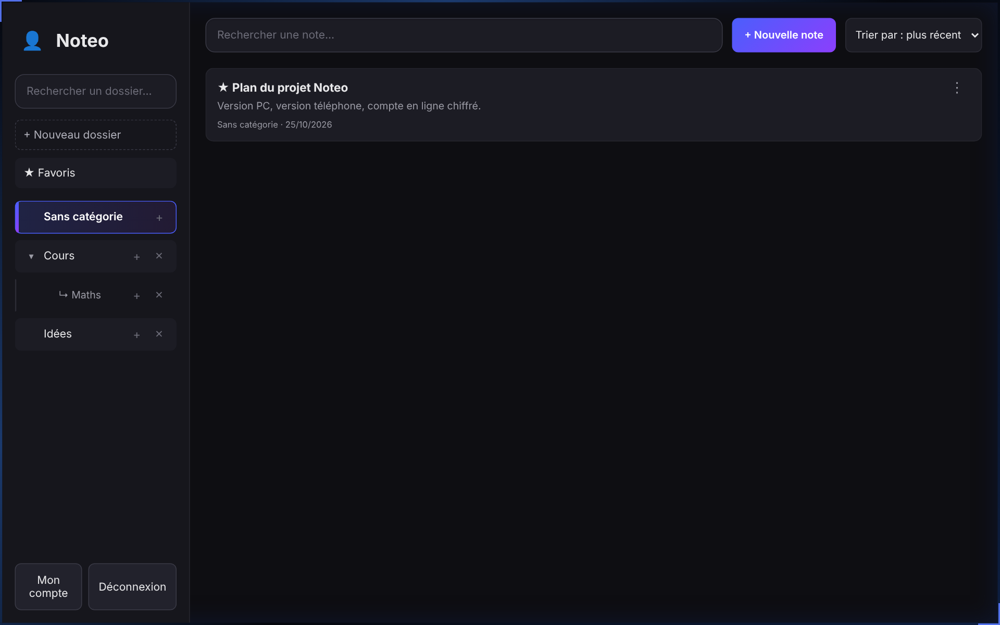
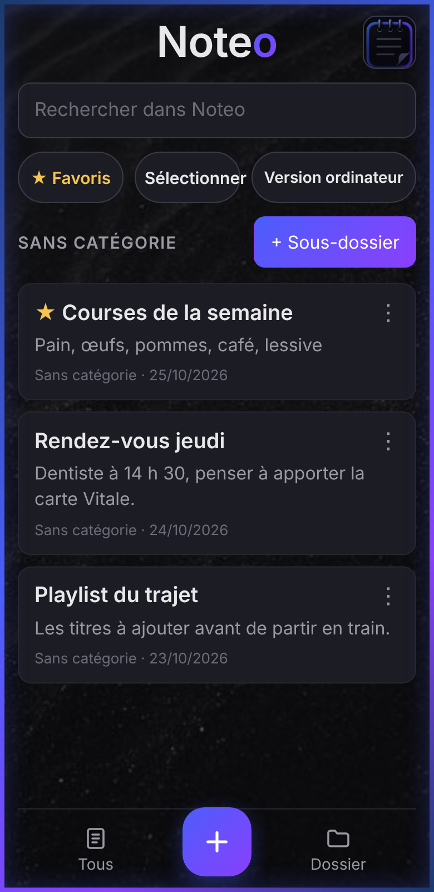

Ton bloc-notes, partout avec toi.
Écris sur ton ordinateur, relis sur ton téléphone. Tes notes sont chiffrées avant de quitter ton appareil.
Gratuit. Fonctionne aussi sans connexion.

★ Déplacer vers la version téléphone
Écris sur ton ordinateur, relis sur ton téléphone. Tes notes sont chiffrées avant de quitter ton appareil.
Gratuit. Fonctionne aussi sans connexion.

★ Déplacer vers la version téléphone
Les notes du PC et celles du téléphone restent séparées. Un même compte en ligne les relie, et tu choisis ce qui passe de l'un à l'autre.
Pour écrire longuement, classer en dossiers et exporter.
Pour noter vite et retrouver ses idées en route.
Passer d'un espace à l'autre : dans le menu d'une note, choisis « Déplacer vers la version téléphone » ou « Déplacer vers la version ordinateur ». Sur le téléphone, le bouton « Version ordinateur » affiche l'espace du PC.
Application à installer depuis le fichier APK. Elle garde tes notes même hors connexion.
Télécharger l'APKInstallateur pour PC, avec raccourcis sur le bureau et dans le menu Démarrer.
Télécharger pour WindowsRien à installer. Ouvre l'appli, puis « Ajouter à l'écran d'accueil » pour l'avoir comme une appli.
Ouvrir l'appli web